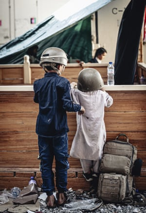
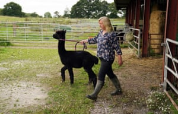
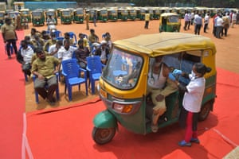
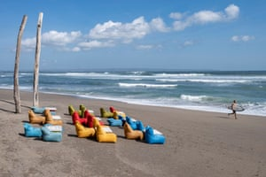
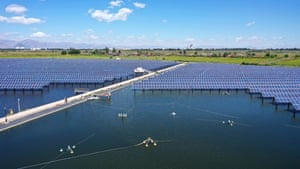

Reading festival and Extinction Rebellion protest: Wednesday’s best photos
The Guardian’s picture editors select photo highlights from around the world
Main image:
Fans arrive early for Reading festival in Berkshire, UK
Photograph: Geoffrey Swaine/Rex/Shutterstock
-
Kabul, Afghanistan
Children wait to be evacuated at Hamid Karzai international airport.Photograph: Gunnery Sgt Melissa Marnell/AP
 -
London, UK
Campaigners protest near the Brazilian embassy in solidarity with the Indigenous peoples of Brazil as Jair Bolsonaro’s government attempts to further open up Indigenous lands to mining and other commercial activities that could exacerbate the destruction of the Amazon rainforest.Photograph: Barcroft Media/Getty
-
Clydebank, UK
Scotland’s first minister, Nicola Sturgeon, and its health secretary, Humza Yousaf, visit a mock theatre that uses innovative medical equipment such as robotic surgery devices at the NHS Golden Jubilee hospital, where the pair launched the Scottish Covid recovery plan.Photograph: Jeff J Mitchell/Getty
-
-
Gloucestershire, UK
Helen Macdonald with Geronimo the alpaca at Shepherds Close farm in Wotton-under-Edge. The alpaca has twice tested positive for bovine tuberculosis and, as a result, the Department for Environment, Food and Rural Affairs has ordered its destruction.Photograph: Andrew Matthews/PA
 -
Tokyo, Japan
Britain’s Dame Sarah Storey celebrates winning a gold medal for the cycling track women’s C5 3,000m individual pursuit at the 2020 Paralympics.Photograph: Shuji Kajiyama/AP
-
-
Bangalore, India
An auto-rickshaw driver receives a dose of the CoviShield vaccine during a free vaccination drive for the drivers.Photograph: Manjunath Kiran/AFP/Getty
 -
Bali, Indonesia
A surfer walks along a nearly empty beach in Canggu. The Indonesian government extended restrictions on community activities from 24 August to 30 August and lowered the Covid restrictions status of a number of regions from PPKM level 4 to PPKM level 3.Photograph: Made Nagi/EPA
 -
-
Yinchuan, China
Photovoltaic panels at a fish breeding base in Helan county, north-west Ningxia Hui autonomous region. The county has many wetlands and lakes in the Yellow River basin.Photograph: Xinhua/Rex/Shutterstock
